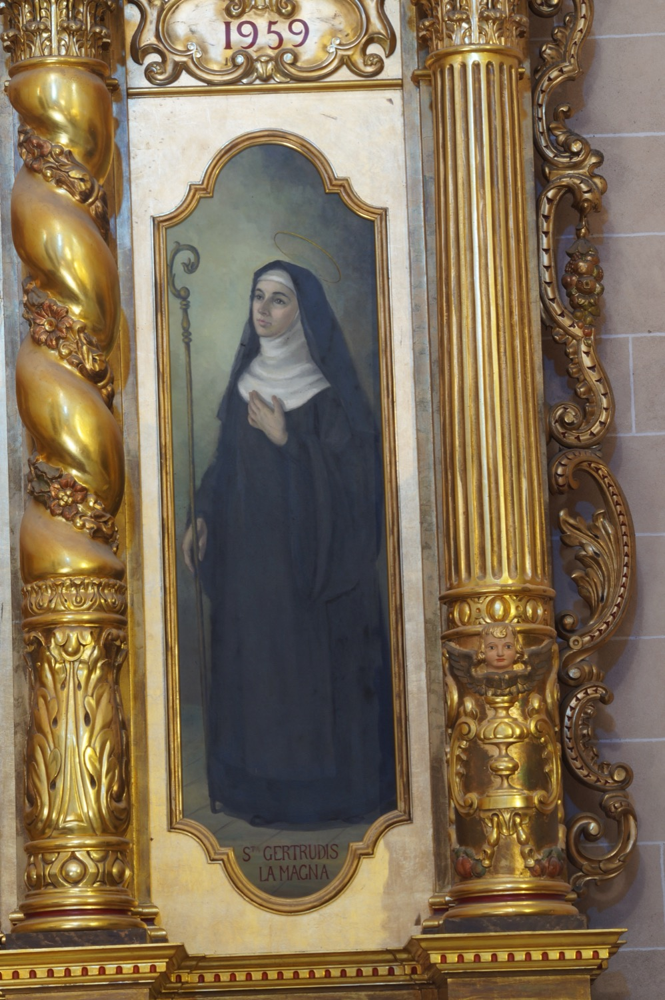

Santa Gertrudis la Magna (1256-1302) fue una teóloga alemana y una de las místicas más importantes del siglo XIII. A los diez años ingresó en el convento de Santa María de Helfta. A partir de los veinticinco años tuvo una serie de visiones místicas que difundió a través de diversos tratados espirituales. A causa de algunas de estas visiones y escritos, se la considera una de las iniciadoras de la devoción al Sagrado Corazón, que presentaba como la expresión del amor de Dios hacia los hombres y refugio de los pecadores. Por ejemplo, en una de sus visiones, reclinó la cabeza sobre el pecho de Jesús y escuchó los latidos de su corazón. En aquel momento, san Juan Evangelista le reveló que él también los había oído cuando reclinó la cabeza sobre el pecho de Jesús durante la Última Cena, pero que no lo había contado en el evangelio porque la devoción al Sagrado Corazón había sido reservada para cuando el mundo necesitara recuperar el amor divino.
En esta pintura santa Gertrudis viste el hábito de las monjas benedictinas: negro, con toca blanca de peto de borde redondeado y velo negro. Sin embargo, la orden a la que pertenecía es objeto de discusión, ya que tanto los benedictinos como los cistercienses reclaman la posesión del convento de Santa María de Helfta en el siglo XIII. En una mano sostiene un báculo abacial. Esta representación es muy habitual, pero en realidad nunca fue abadesa. La confusión se debe a que otra santa del mismo nombre, santa Gertrudis de Hackeborn, sí fue abadesa de su convento.